| Proyecto (viewport) | Prueba | Resultado | Detalle |
|---|---|---|---|
| movil | formulario de Login - estado inicial | ⚠ Diferencia visual | 37979 px (16.00%) |
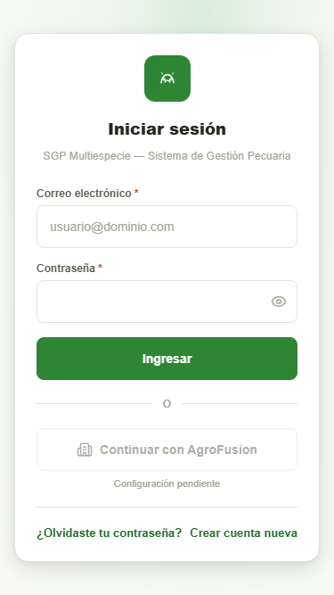 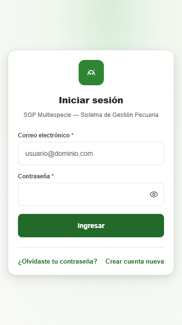 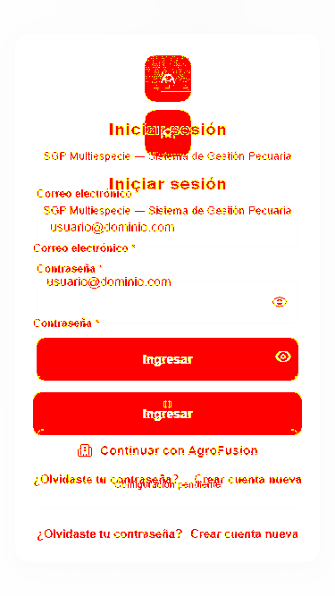 | |||
| movil | formulario de Login - estado con error | ⚠ Diferencia visual | 10521 px (5.00%) |
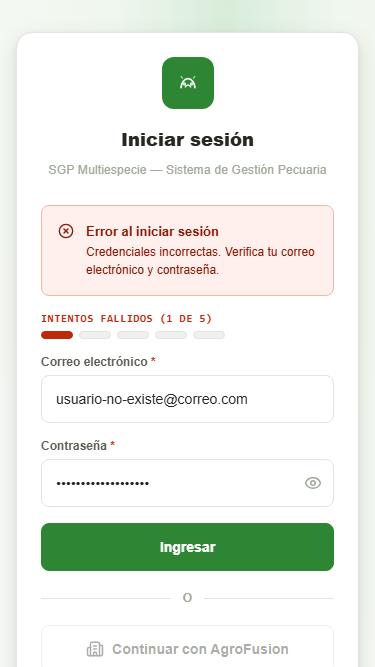 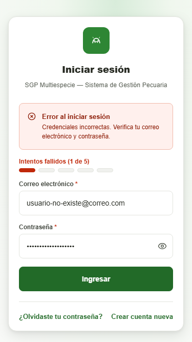 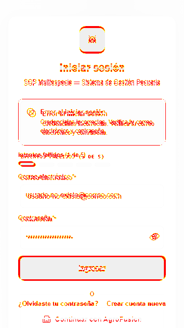 | |||
| tablet | formulario de Login - estado inicial | ⚠ Diferencia visual | 57944 px (8.00%) |
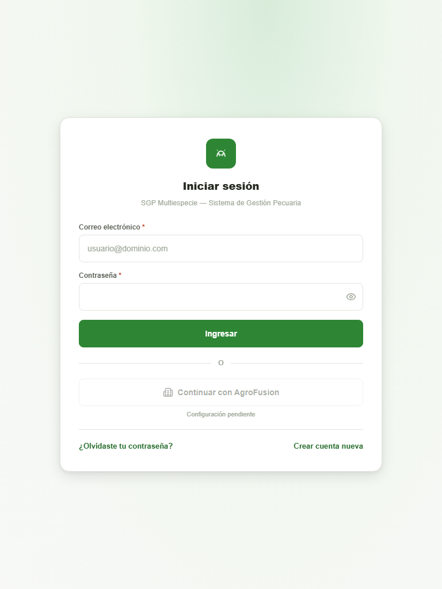 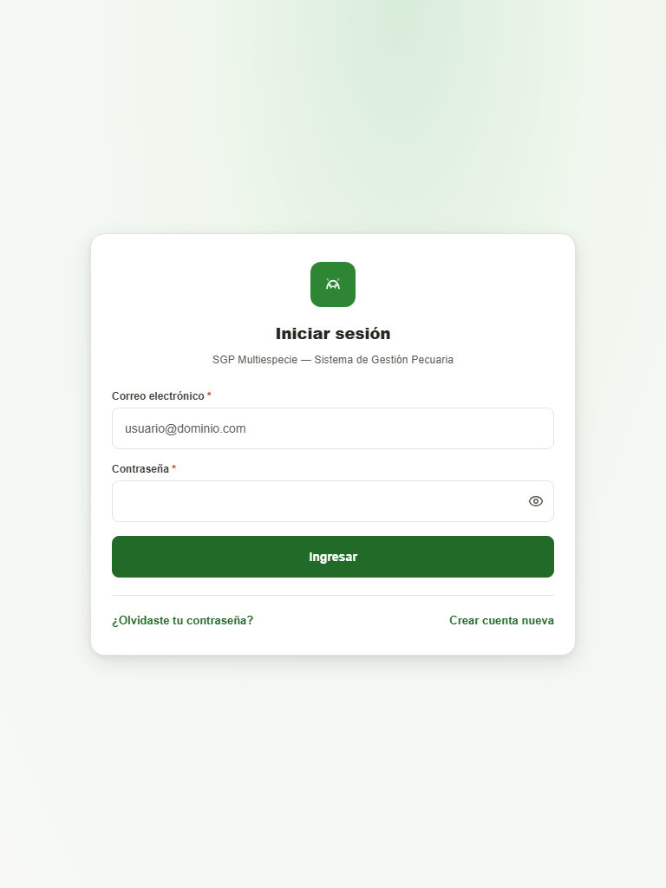 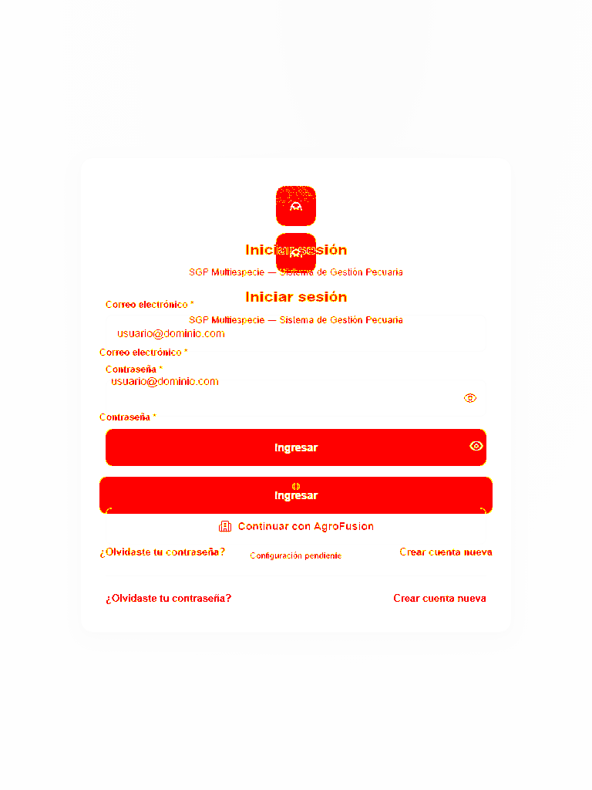 | |||
| tablet | formulario de Login - estado con error | ⚠ Diferencia visual | 62623 px (8.00%) |
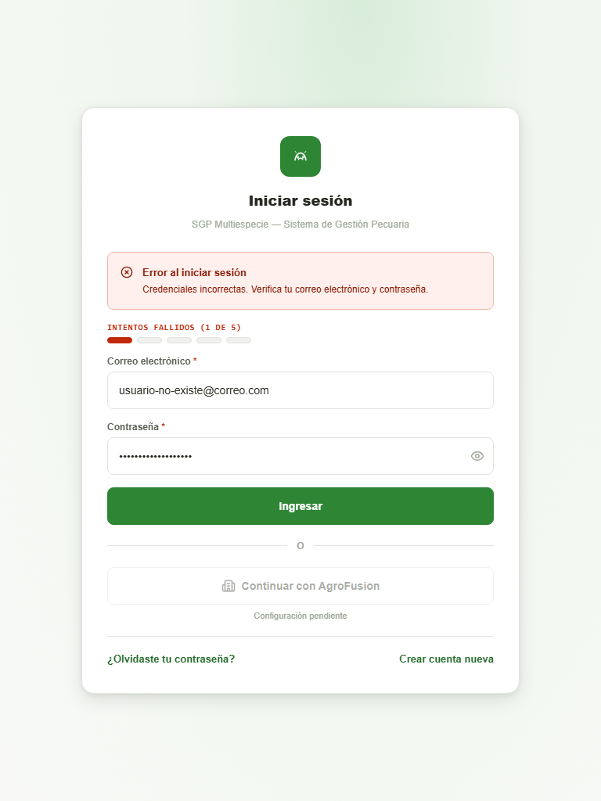 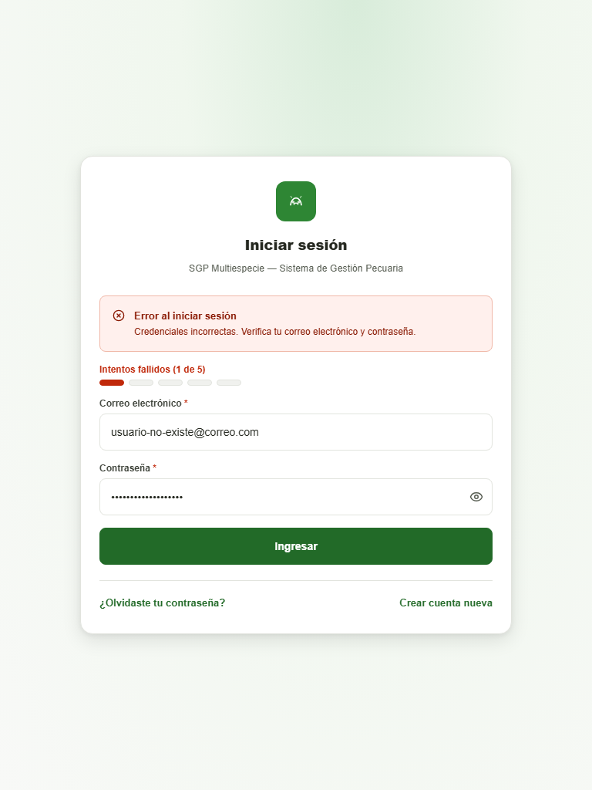 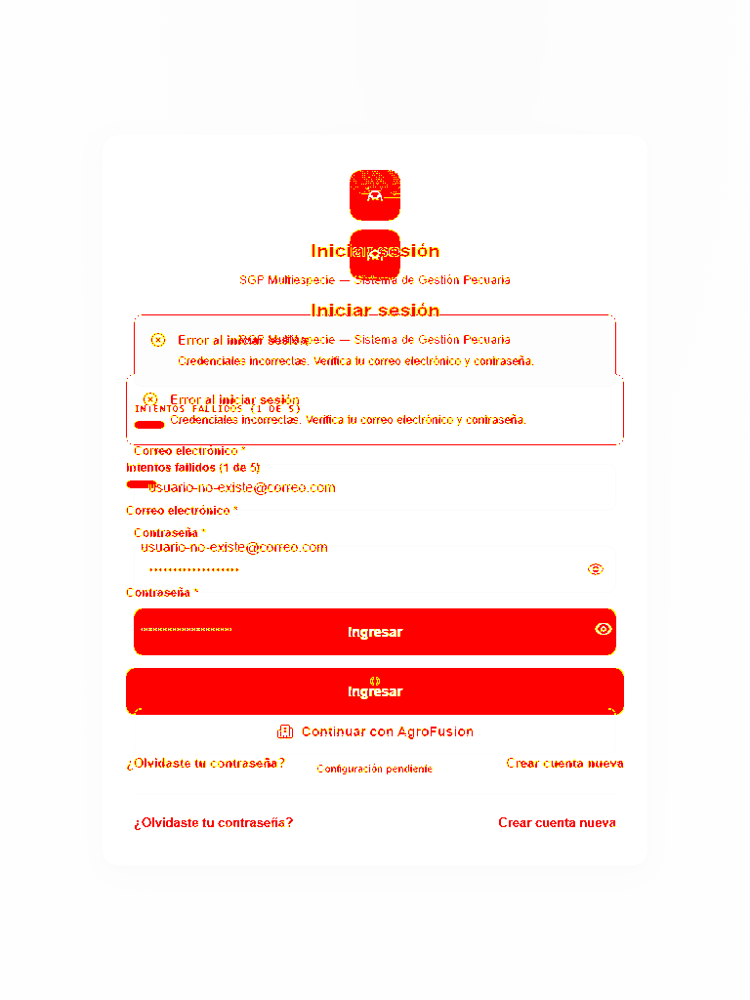 | |||
| escritorio | formulario de Login - estado inicial | ⚠ Diferencia visual | 57863 px (5.00%) |
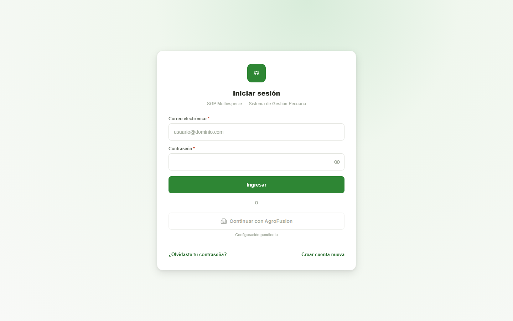 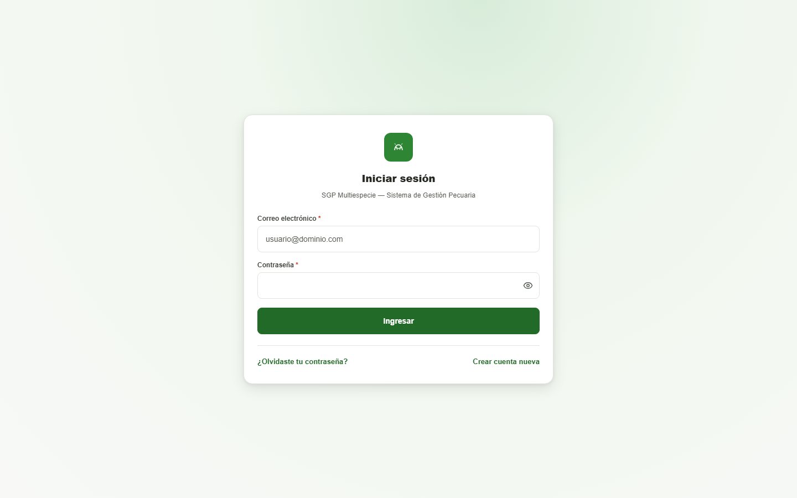 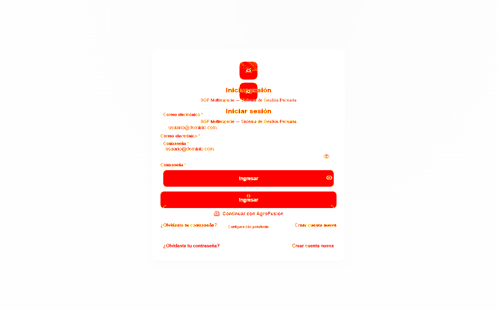 | |||
| escritorio | formulario de Login - estado con error | ⚠ Diferencia visual | 62621 px (5.00%) |
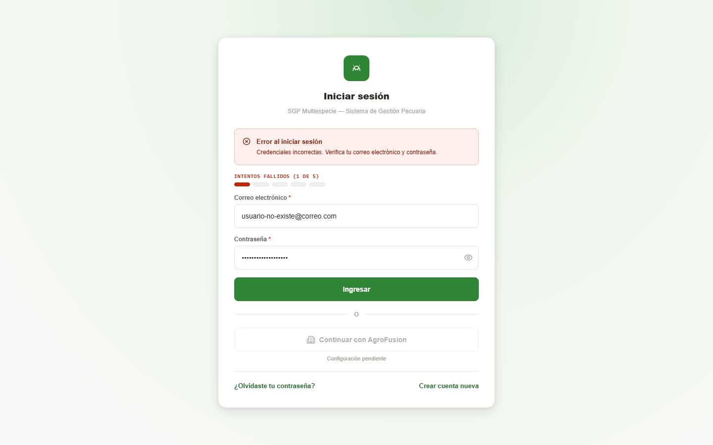 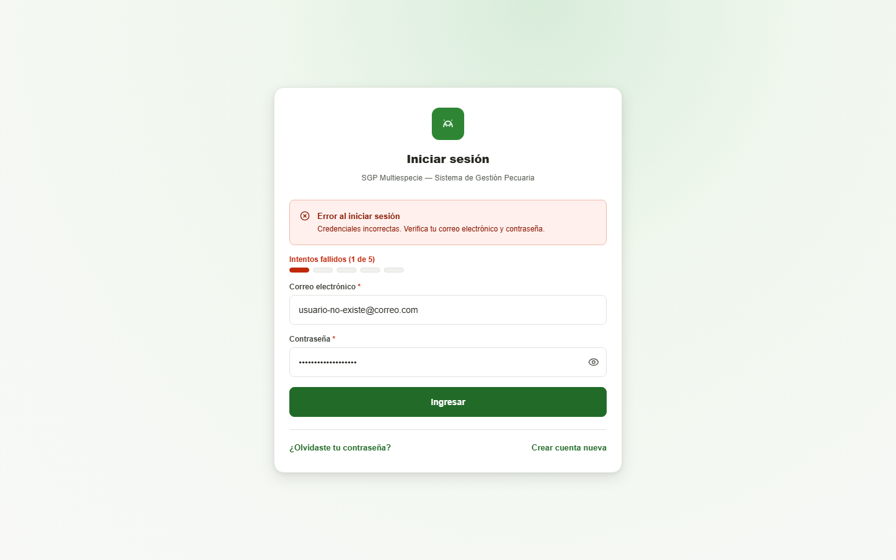 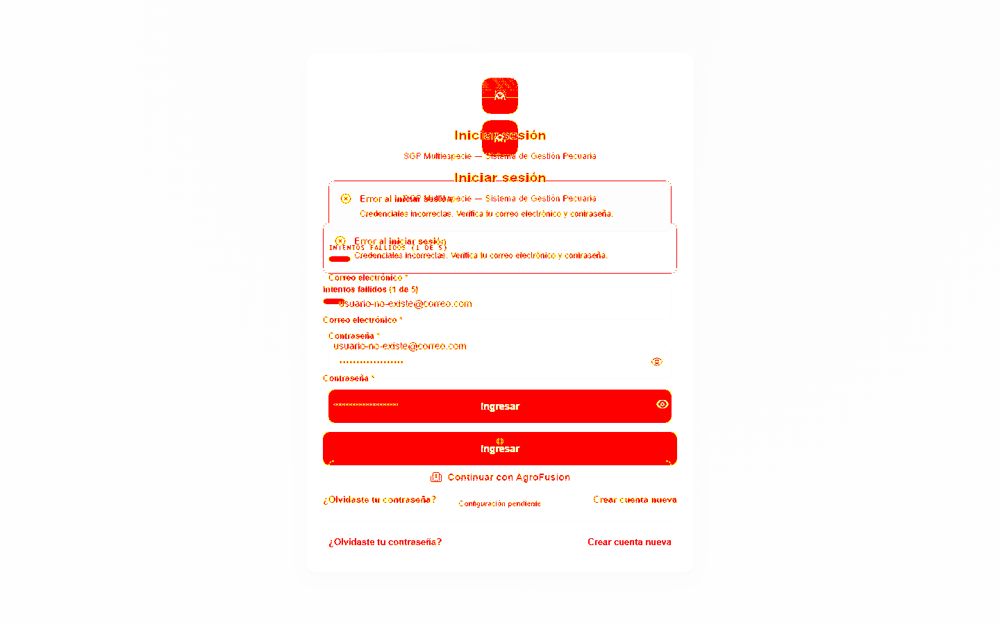 | |||